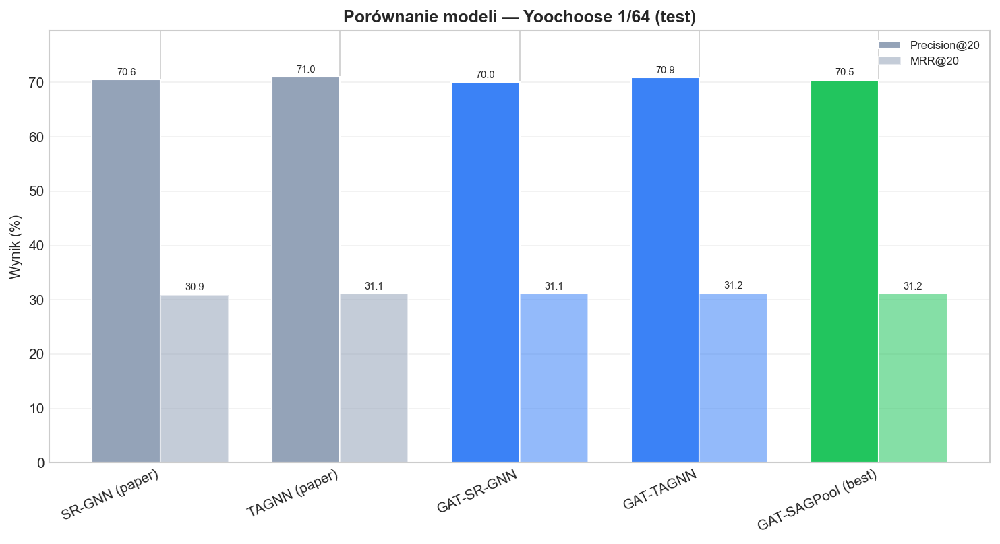
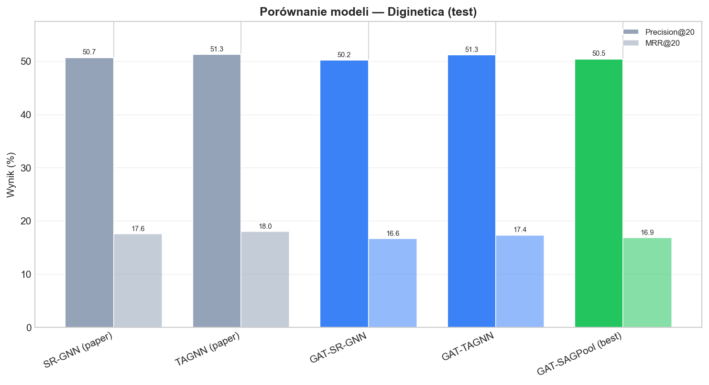
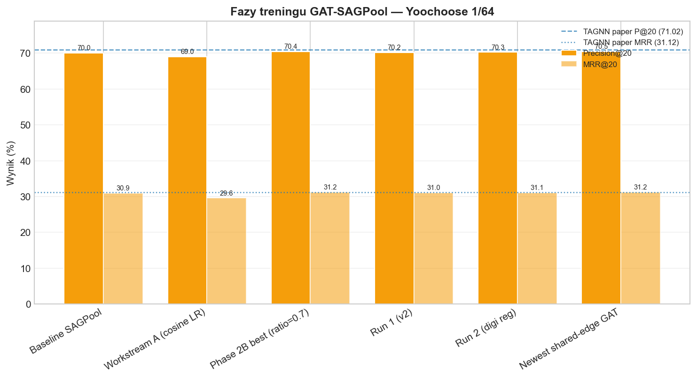
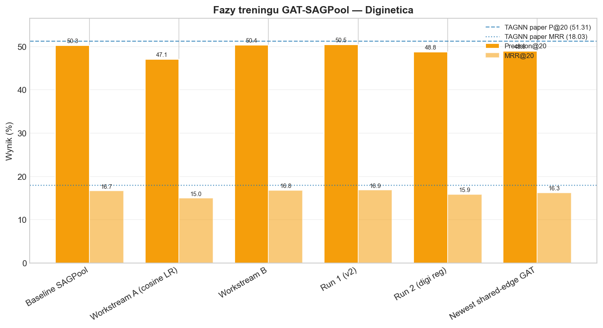
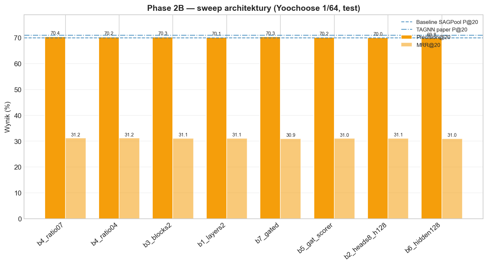
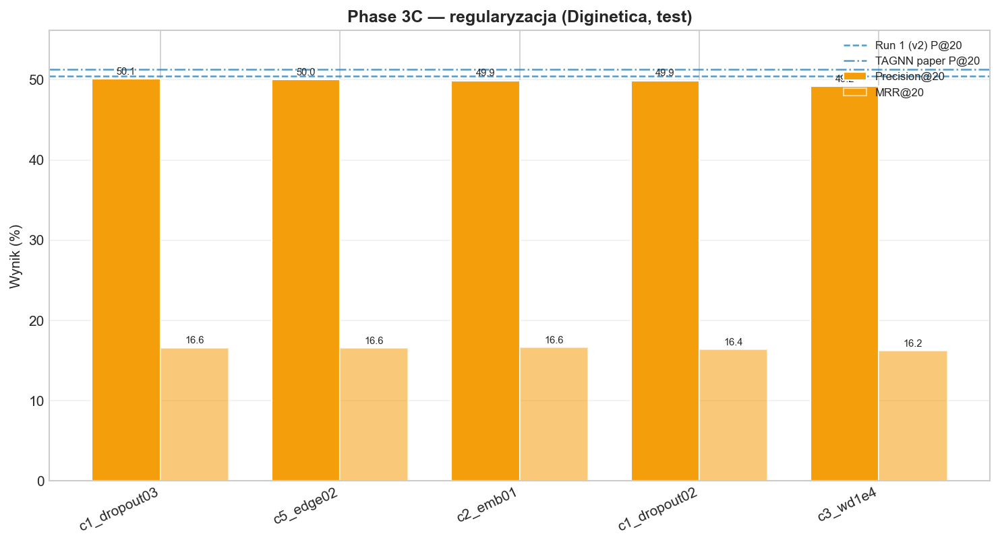
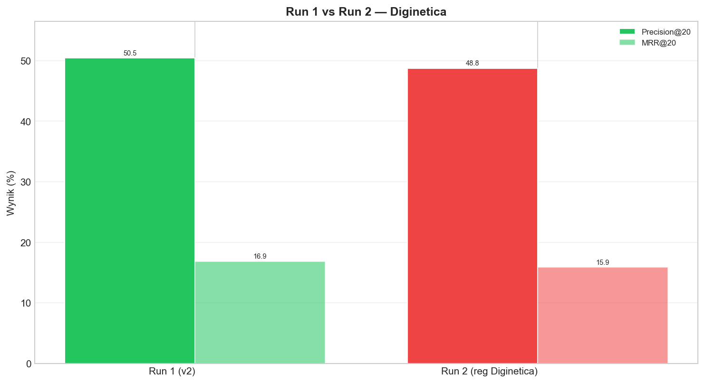
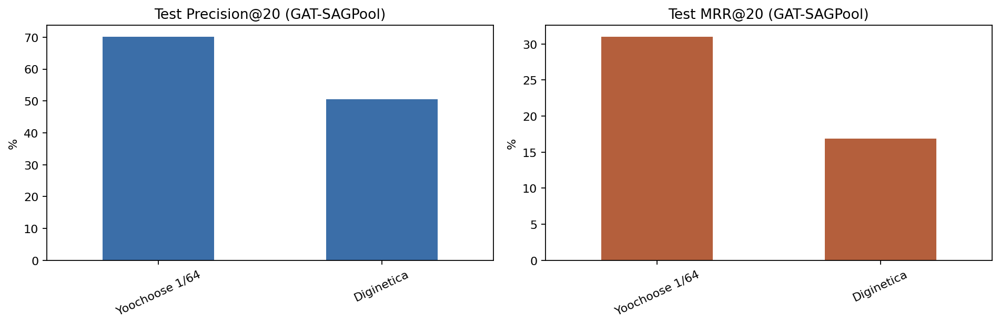
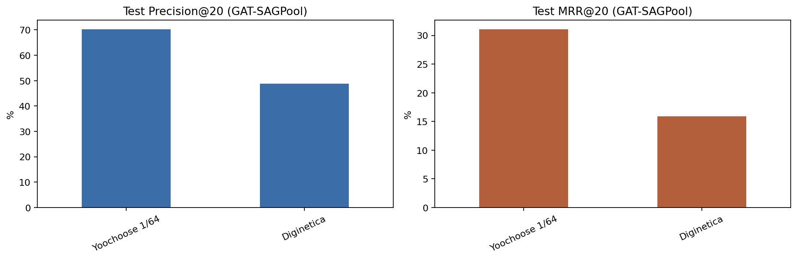

1. O co chodzi w projekcie
Badamy rekomendacje w sesji zakupowej: użytkownik klika produkty po kolei (bez logowania), a system ma zgadnąć następny produkt, który prawdopodobnie kliknie. To nie prognoza sprzedaży — to przewidywanie kolejnego elementu z historii.
Każda sesja zamieniana jest w graf: węzły to produkty, krawędzie to kolejne przejścia między kliknięciami. Na grafie działa sieć neuronowa, która uczy się „rozumieć” sesję i ocenia wszystkie znane produkty — prawdziwy następny ma dostać wysoki wynik.
Główne pytanie badawcze: czy zamiast klasycznego enkodera grafowego (GGNN z artykułów) lepiej sprawdzi się GAT (Graph Attention Network — sieć z wagami uwagi na sąsiadach)? I czy wynik zależy od tego, jak na końcu składamy graf w jeden opis sesji (readout)?
Datasety: Yoochoose 1/64 i Diginetica. Metryki: Precision@20 (czy trafienie jest w top-20 rekomendacji) i MRR@20 (jak wysoko na liście — im wyżej, tym lepiej).
2. Trzy notebooki — dwa z literatury, jeden autorski
W projekcie są trzy gałęzie. Wspólne: ten sam sposób czyszczenia danych, budowy grafu sesji i (u nas) enkoder GAT zamiast GGNN z oryginalnych prac. Różnią się drugą częścią modelu — sposobem złożenia węzłów grafu w jeden wektor sesji.
| Notebook | Źródło | Co zmieniliśmy | Po co |
|---|---|---|---|
gat_sr_gnn_architecture.ipynb |
SR-GNN artykuł naukowy | GGNN → GAT; readout SR-GNN bez zmian | Sprawdzić, czy GAT poprawia wynik przy klasycznym opisie sesji (uwaga globalna + ostatnie kliknięcie) |
gat_tagnn_architecture.ipynb |
TAGNN artykuł naukowy | GGNN → GAT; readout TAGNN bez zmian | Sprawdzić GAT z uwagą zależną od kandydata — opis sesji zmienia się w zależności od ocenianego produktu |
gat_sagpool_architecture.ipynb |
autorski GAT + SAGPool | Inny readout: SAGPool zamiast SR-GNN/TAGNN | Przetestować w pełni „uwagowy” pipeline: GAT na węzłach + pooling wybierający ważne węzły — nasz pomysł eksploracyjny |
Krótko: czym różnią się readouty
- SR-GNN: jeden wektor sesji = ostatnie kliknięcie + ważona suma wszystkich pozycji w prefiksie. Ten sam wektor dla wszystkich produktów-kandydatów.
- TAGNN: najpierw szkic sesji, potem dla każdego kandydata osobna uwaga — „czy ta sesja pasuje do tego produktu?”.
- SAGPool (nasz): model ocenia węzły grafu, zostawia część „najważniejszych”, robi z nich zwięzły opis całej sesji + dokleja sygnał ostatniego kliknięcia.


3. Czym jest SAGPool i po co go zrobiliśmy
Cel architektury: sprawdzić, czy zamiast readoutu z SR-GNN lub TAGNN można użyć mechanizmu, który sam wybiera najważniejsze węzły w grafie sesji i z nich buduje opis — spójnie z ideą „wszystko na uwadze”, bez osobnej fazy target-aware jak w TAGNN.
Charakterystyka SAGPool w naszym wariancie:
- Każdy węzeł (produkt w prefiksie) dostaje ocenę ważności.
- Zostaje tylko top frakcja węzłów (u nas domyślnie 70% — parametr
sagpool_ratio). - Z pozostałych liczymy średnią i maksimum embeddingów → opis „całej sesji”.
- Pooling nie pamięta kolejności kliknięć — dlatego jawnie dokładamy embedding ostatniego kliknięcia (sygnał „co user zrobił na końcu”).
- Na końcu ten opis sesji porównujemy z embeddingami wszystkich produktów ze słownika (jak w pozostałych notebookach).
4. Jak działa GAT-SAGPool — krok po kroku
Poniżej przepływ danych w notebooku gat_sagpool_architecture.ipynb. Zakładamy, że nie znasz szczegółów ML — chodzi o logiczną kolejność.
Etap A — dane wejściowe
- Bierzemy logi kliknięć (Yoochoose / Diginetica).
- Usuwamy za krótkie sesje i zbyt rzadkie produkty.
- Dzielimy dane czasowo (starsze = trening, nowsze = test).
- Z sesji
[A, B, C, D]robimy wiele przykładów:[A]→B,[A,B]→C,[A,B,C]→D.
Etap B — graf sesji
Prefiks [A, B, C] → graf: węzły = unikalne produkty {A, B, C}, krawędzie = przejścia w kolejności kliknięć (w przód i w tył). Powtarzające się produkty w prefiksie to ten sam węzeł.
Etap C — enkoder GAT (wspólny pomysł ze wszystkimi trzema notebookami)
- Każdy produkt ma wektor liczb (embedding) — uczy się w treningu.
- GAT w przód: węzeł zbiera sygnał od sąsiadów z wagami uwagi („które przejście ważniejsze”).
- GAT w tył: to samo po odwróconych krawędziach.
- Wyniki obu kierunków sklejamy i redukujemy do jednego wektora na węzeł (wymiar 100).
To zamiana GGNN z oryginalnych artykułów — reszta protokołu (metryki, podział danych) zostaje podobna.
Etap D — readout SAGPool (tylko w tym notebooku)
Etap E — trening i ocena
- Optymalizator Adam, uczenie przez wiele epok, wczesne zatrzymanie gdy walidacja przestaje rosnąć.
- Wybór najlepszego checkpointu po MRR@20 na walidacji.
- Metryki końcowe liczone na zbiorze testowym (nigdy nie widzianym w treningu).
5. Fazy ulepszania GAT-SAGPool
Model nie trenowaliśmy „raz i koniec”. Poniżej chronologia — co próbowaliśmy i jaki był efekt na zbiorze testowym.
| Faza | Co zmieniliśmy | Yoochoose (P@20 / MRR) | Diginetica (P@20 / MRR) | Efekt |
|---|---|---|---|---|
| Baseline | Pierwszy działający SAGPool: ratio=0.5, 1 warstwa GAT | 70.04 / 30.90 | 50.28 / 16.66 | Punkt odniesienia |
| Workstream A | Inny harmonogram LR (cosine, więcej epok) | 69.02 / 29.56 | 47.10 / 14.98 | Pogorszenie — odrzucone |
| Workstream B | Implementacja readoutu + pierwszy pełny run | 70.36 / 30.94 | 50.36 / 16.83 | Lekka poprawa vs baseline |
| Phase 2B (sweep) | 8 wariantów architektury — tylko Yoochoose; najlepszy: ratio=0.7 |
70.42 / 31.16 | — | Najlepszy SAGPool na Yoochoose |
| Phase 3C (sweep) | Regularyzacja — tylko Diginetica (pojedyncze warianty) | — | ~49–50 / ~16.2–16.6 | Bez przełomu; combo / label smoothing — błąd runu |
| Run 1 | ratio=0.7 + 2 warstwy GAT, oba datasety | 70.18 / 31.01 | 50.47 / 16.85 | Diginetica: najlepszy pełny run; Yoo: gorszy niż sam ratio=0.7 ze sweepu |
| Run 2 | Run 1 + regularyzacja tylko na Diginetica (dropout, emb. dropout, wd) | 70.27 / 31.08 | 48.77 / 15.86 | Diginetica gorzej; Run 2 odrzucony |


Phase 2B — szczegóły (architektura, Yoochoose)
Testowaliśmy m.in.: głębszy GAT (2 warstwy), więcej głów uwagi, hierarchiczny SAGPool (2 bloki), różne ratio, scorer GAT zamiast GraphConv, większy hidden, gated readout.
- Zysk:
ratio=0.7— mniej agresywne obcinanie węzłów (+0.38 P@20 vs baseline). - Neutralne: 2 bloki SAGPool, 2 warstwy GAT — marginalnie.
- Strata: hidden=128 — gorzej na teście.

b4_ratio07 na szczycie.Phase 3C — regularyzacja (Diginetica)
Cel: zmniejszyć overfit (walidacja ~19.3 MRR, test ~16.8). Pojedyncze techniki (dropout, edge dropout, weight decay) nie poprawiły testu względem Run 1; połączenie w Run 2 pogorszyło.

Run 1 vs Run 2


gat_sagpool_v2): walidacja vs epoki.
gat_sagpool_v2_digi_reg).6. Wyniki końcowe — najlepszy SAGPool vs reszta
| Model | Dataset | P@20 | MRR@20 | Uwagi |
|---|---|---|---|---|
| SR-GNN (paper) | Yoochoose | 70.57 | 30.94 | literatura |
| TAGNN (paper) | Yoochoose | 71.02 | 31.12 | literatura |
| GAT-SR-GNN (nasz) | Yoochoose | 70.12 | 31.15 | readout SR-GNN + GAT |
| GAT-TAGNN (nasz) | Yoochoose | 70.61 | 31.00 | readout TAGNN + GAT |
| GAT-SAGPool (best) | Yoochoose | 70.42 | 31.16 | sweep ratio=0.7 |
| SR-GNN (paper) | Diginetica | 50.73 | 17.59 | literatura |
| TAGNN (paper) | Diginetica | 51.31 | 18.03 | literatura |
| GAT-SR-GNN (nasz) | Diginetica | 50.25 | 16.65 | |
| GAT-TAGNN (nasz) | Diginetica | 51.25 | 17.35 | najlepszy u nas |
| GAT-SAGPool (best) | Diginetica | 50.47 | 16.85 | Run 1 |
Podsumowanie liczb: na Yoochoose SAGPool jest blisko wyników z papierów i naszych GAT-SR-GNN / GAT-TAGNN (różnice rzędu 0.2–0.6 pkt). Na Diginetica GAT-TAGNN jest najbliżej literatury; SAGPool zostaje ~0.8–1.5 pkt za TAGNN. Nie pobiliśmy wyników referencyjnych — ale nie jesteśmy daleko na łatwiejszym zbiorze.
7. Wnioski
- GAT-SAGPool to sensowna, autorska trzecia ścieżka — ten sam graf i GAT co w pozostałych notebookach, inny readout oparty o wybór ważnych węzłów (SAGPool).
- Readout ma duże znaczenie. TAGNN (uwaga zależna od kandydata) wygrywa na Diginetica. SAGPool bez target-aware mechanizmu ma trudniej na trudniejszym zbiorze.
- Najważniejsza poprawka architektury:
sagpool_ratio=0.7(mniej obcinania węzłów niż 0.5). Głębszy GAT (2 warstwy) w pełnym runie nie powtórzył najlepszego wyniku ze sweepu. - Regularyzacja (Run 2) na Diginetica nie pomogła — test spadł. Plan GPU dla SAGPool zamknięty po Run 1 + Run 2.
- Cel „pobić TAGNN i SR-GNN” nie został spełniony, ale na Yoochoose jesteśmy w tym samym przedziale co modele z literatury — co uzasadnia wniosek, że GAT + sensowny readout daje wyniki porównywalne, a wybór readoutu warto badać dalej.
- Do prezentacji / pracy cytuj: Yoochoose — SAGPool 70.42 / 31.16 (Phase 2B); Diginetica — SAGPool 50.47 / 16.85 (Run 1). Porównanie z GAT-TAGNN: 51.25 / 17.35.